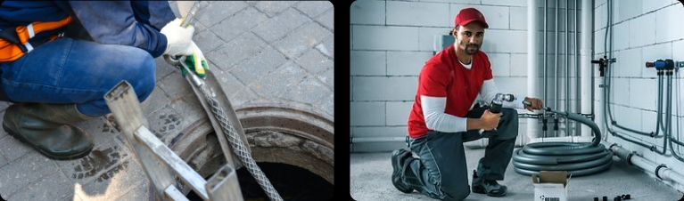

November 12, 2023
November 12, 2023
Your home's plumbing system is a vital part of daily life, but it's easy to take it for granted until a problem arises. One common issue many homeowners face is clogged drains. While minor clogs can often be resolved with a plunger or some DIY solutions, knowing when it's time for professional drain cleaning can save you from more significant plumbing headaches. In this blog, we'll explore the signs that indicate it's time to schedule drain cleaning services.
“They were knowledgeable, clearly explaining the work they needed to do. I really appreciated that. Our kitchen sink got plugged up. We called the Plumber in the morning and they had it fix by the afternoon.”Donna Behrens
Home owners
Fortunately, recognizing the signs of a clogged drain early on can save you from a bigger plumbing headache down the line. In this blog, we'll explore how to know when you need drain cleaning and why it's essential to address this issue promptly.
- Slow Drainage: One of the earliest and most noticeable signs that you need drain cleaning is slow drainage. If water takes longer to go down your sink, shower, or bathtub, it's a clear indication of a potential blockage.
- Gurgling Sounds: If you hear gurgling sounds coming from your drains or toilet when you're using them, this is a strong indicator of a clog. These sounds occur because air is trapped in the plumbing system due to the blockage, and as the water tries to pass through, it displaces the trapped air, resulting in those distinctive gurgling noises.
- Water Backups: Water backups are a clear sign that you need drain cleaning. When water from one drain or appliance (e.g., a washing machine) backs up into another, it's a sign of a blockage somewhere in your plumbing system. This can result in water damage and a significant inconvenience.
Fortunately, recognizing the signs of a clogged drain early on can save you from a bigger plumbing headache down the line. In this blog, we'll explore how to know when you need drain cleaning and why it's essential to address this issue promptly.